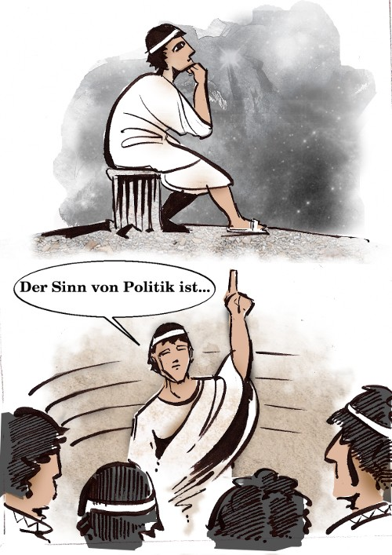
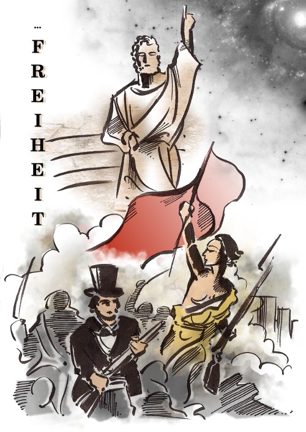

Hannah Arendt (1906-1975) widmet sich in ihrem philosophischen Werk „Vita activa – Vom tätigen Leben“ –
wie der Titel andeutet – dem tätigen Leben, oder der scheinbar einfachen Frage: was tun wir, wenn wir
tätig sind?
Wie so oft, überdeckt die Selbstverständlichkeit alltäglichen Handelns die tieferen Zusammenhänge, die
unser Leben bestimmen. Um uns zu sensibilisieren für verloren gegangene Dimensionen unserer Alltagswelt,
stellt Hannah Arendt die Frage, wie sich bestimmte Grundkategorien des Lebens: Arbeit, Herstellen und
Handeln, im Verhältnis zueinander und in ihrer Bedeutung gewandelt haben, beginnend in der Antike.
Die griechische Antike zeichnet sich diesbezüglich durch ein besonderes Verhältnis zur Ewigkeit und – im
politischen Sinne noch wichtiger – zur Unsterblichkeit aus. Denn während die Suche nach ewigen
Wahrheiten zu politischer Enthaltsamkeit und Abwendung von der Welt verführt, ist das Streben nach
Unsterblichkeit ein zutiefst politischer Drang, in dem Sinne, dass es zur Tat drängt: einer Tat, deren
Wirkung das eigene Leben überdauert. (vgl. S. 28ff, Vita Activa (im folgenden: VA))
„Ohne dies Übersteigen in eine mögliche irdische Unsterblichkeit kann es im Ernst weder
Politik noch eine gemeinsame Welt noch eine Öffentlichkeit geben.“ (S. 68, VA)
Revolution

„Der Sinn von Politik ist Freiheit.“ (Was ist Politik?, 2003)
Die Freiheit zum Handeln ist der Notwendigkeit des Überlebens entgegengesetzt. Im griechischen
Stadtstaat war es die konzeptionelle Aufgabe der Politik, dem Mensch ein Raum zur Entfaltung zu bieten.
Diesem Raum der öffentlichen Tat war der private Bereich des Haushalts entgegengesetzt, der sich um die
Frage drehte, wie man den Lebensunterhalt sichert – im Vergleich zum Glanz der öffentlichen Kultur eher
gering geschätzt:
„Wenn jemand, der genug besaß, um den eigenen Lebensunterhalt zu bestreiten, beschloß,
seinen Besitz zu vermehren, anstatt ihn aufzubrauchen oder gerade soviel Sorgfalt auf ihn zu
verwenden, wie zu seiner Erhaltung notwendig war, so hatte er eben freiwillig auf seine Freiheit
verzichtet und sich zu dem erniedrigt, was die Sklaven und die Armen nur unter dem Druck der
Umstände geworden waren – ein Knecht der Notwendigkeit.“ (S. 80, VA)
Ein prägendes Ereignis der Neuzeit war die Französische Revolution, die sich erneut die Freiheit auf die
Fahnen schrieb. Doch die Revolution fand statt inmitten gewaltiger gesellschaftlicher Umwälzungen, als
deren Folge die Sphäre politischer Freiheit im Verhältnis zur ökonomischen Freiheit des Erwerbs
heruntergestuft wurde. (vgl S. 80f, VA)